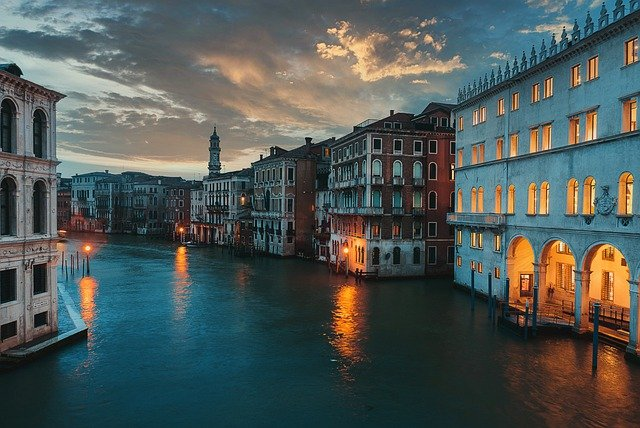

Todo viajante sabe que quanto mais perto vai chegando o dia da viagem, mais o coração fica acelerado, aquela ansiedade saudável aumenta e quase se torna insuportável. É a expectativa de conhecer um novo lugar incrível ou matar a saudade de uma cidade que a gente tanto amou conhecer. O contrário também é verdadeiro: nas situações em que estamos momentaneamente impossibilitados, como o caso da pandemia do novo coronavírus, e que precisamos de isolamento social, acabamos nos sentimos mal, exatamente por não podermos colher os benefícios de viajar.
Segundo a ciência, viajar faz bem para o seu corpo, para a sua mente e para as suas emoções. Está comprovado pelos mais variados tipos de estudos que tirar um tempo de férias tem muitos benefícios por ajudar, de diversas maneiras, a recarregar as energias e refrescar as ideias. Essa é a razão Jens Pruessner, PhD e professor da Universidade McGill, em Montreal, Canadá, afirmar: “Viajar não é um luxo. É um investimento em sua saúde”.
Dizem que viajar enriquece a alma, abre a mente e faz bem ao coração, concordam? Eu não tenho dúvida, viajar é sair da sua zona de conforto e se conhecer, conhecer gente nova, uma cultura nova, aprender um novo idioma, entre outras razões que me inspiraram a fazer essa listinha com 15 motivos pelos quais viajar é TÃO BOM. Viajar é uma terapia para mim, é um REMÉDIO, é um vício.
Existem lugares incríveis por aí, apenas esperando você passar por lá. Lugares lindos, ao redor do mundo.